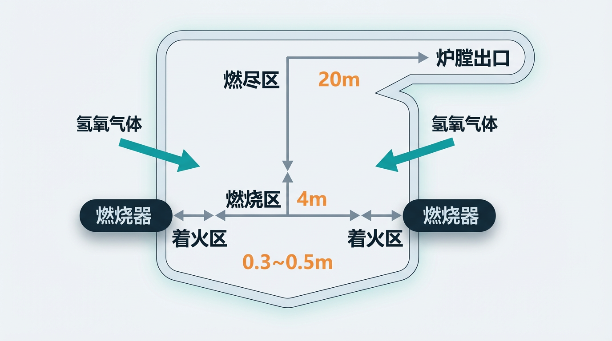
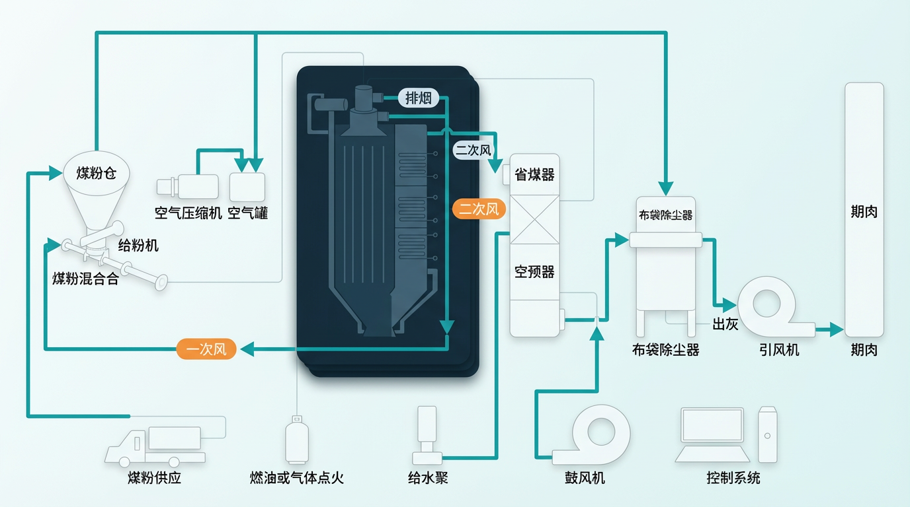

通过活性中间体参与燃烧反应，增强燃尽过程，在维持燃烧稳定的同时减少热损失，推动单位产热所需主燃料下降。
INTERACTIVE BRIEFING
辅助燃烧与节能改造机理
本页聚焦机理假设与工程证据，把关键逻辑拆解成可点击模块，便于投资人和技术评审快速理解“为何有效、证据到哪里、还需补哪些验证”。
CORE LOGIC
机理核心：链锁反应如何转化为节能收益
在低负荷、波动工况下，燃烧链路更容易失稳。辅助燃烧介质的分级注入有助于提高火焰传播与反应连续性。
在 700°C 以下，干燥条件的 CO 与 O₂ 反应困难。H· 与 ·OH 作为活化中心参与后，CO 氧化链锁反应可持续推进。
在不额外拉高空气过量系数的前提下，减少排烟热损失，协同控制温室气体过量排放与尾部运行成本。
机理假设 A
短寿命中间体参与局部反应活化
机理假设 B
促进 CO 后续氧化并改善燃尽率
VISUAL WALKTHROUGH
机理图解：点击切换查看两组核心机理图

INTERPRETATION · A
反应路径与活化中心角色
该图用于展示辅助燃烧介质参与后的反应路径示意，强调局部反应活化与燃烧推进逻辑。

INTERPRETATION · B
方法论补充与效率结论
该图用于补充说明机理到工程效果的过渡逻辑，支撑“提高燃尽率、降低热损失、改善运行经济性”的结论链。
ENGINEERING EVALUATION
工程评估面板：用连续运行口径看收益
EVALUATION BASIS
以系统指标替代单一热值
- 建立改造前后锅炉运行基线
- 连续跟踪单位产出综合能耗
- 同步记录负荷、主燃料类型、配风和工况
- 以第三方检测结果进行复核
CURRENT PROJECT SIGNAL
阶段测试节能空间约 2% 至 8%
- 固定床：CO 峰值提前 2 至 4 分钟
- 固定床：固定碳残余最高下降 49.19%
- 工业侧：已完成 260T 锅炉阶段应用验证
- 结论：需在更长周期工况继续定量验证
INTERACTIVE ESTIMATOR
输入基线年燃料成本，估算节能收益区间
基线年燃料成本1000 万元
节能收益下限（2%）20 万元
节能收益上限（8%）80 万元
建议评估口径连续运行+第三方复核
说明：本估算仅用于投资沟通演示，实际收益受锅炉类型、主燃料类型、负荷水平、配风与运行稳定性影响，需以现场连续数据为准。